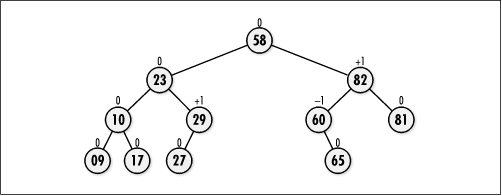
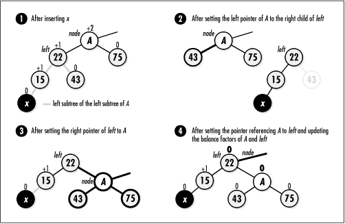
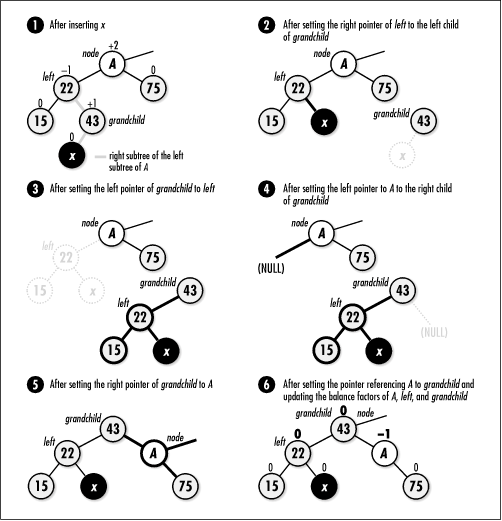
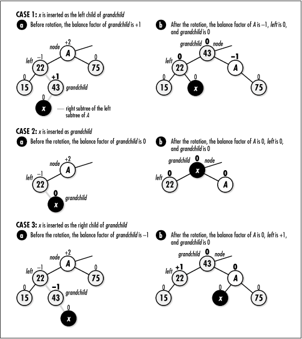
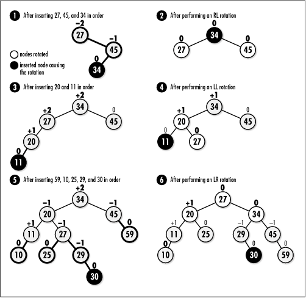

9.7 Implementation and Analysis of
Binary Search Trees
As described earlier, binary search
trees perform well only if the tree remains balanced.
Unfortunately, keeping a binary search tree balanced is a more
difficult problem than it may at first appear. Nevertheless,
there are a few clever approaches one can take. One of the
best approaches is to implement the tree as an AVL tree.
An AVL (Adel'son-Vel'skii and Landis) tree is
a special type of binary tree that stores an extra piece of
information with each node: its balance factor. The balance factor of a node is the
height of the subtree rooted at its left child minus the
height of the subtree rooted at its right child (see Figure
9.9). As nodes are inserted, an AVL tree adjusts itself so
that all balance factors stay +1, -1, or 0. A subtree whose
root node has a balance factor of +1 is said to be left-heavy. A subtree whose root node
has a balance factor of -1 is said to be right-heavy. A subtree whose root
node has a balance factor of is considered balanced. By
keeping its subtrees nearly balanced, an AVL tree stays approximately balanced overall.

The basic means of searching and inserting
nodes in an AVL tree is the same as described earlier.
However, when we insert a node into an AVL tree, we have some
additional work to do after the node descends to its
appropriate position. First, we must account for the change in
balance factors that occurs as a result of the insertion.
Also, if any balance factor becomes ±2, we must rebalance the
tree from that point down, which is done by performing an
operation called a rotation.
9.7.1 Rotations in AVL Trees
A rotation
rebalances part of an AVL tree by rearranging nodes while
preserving the relationship wherein the left is smaller than
the parent and the parent is smaller than the right, which
must be maintained for the tree to remain a binary search
tree. After the rotation, the balance factors of all nodes in
the rotated subtree are +1, -1, or 0.
There are only four types of rotations that
ever have to be performed. These are the LL (left-left), LR (left-right), RR (right-right), and RL (right-left) rotations. The functions
rotate_left and rotate_right, presented later in Example
9.5, implement each of these rotations. To understand when
we need to apply each rotation, let x represent the node we have just
inserted into its proper location in an AVL tree, and let
A be the nearest ancestor of
x whose balance factor has
changed to ±2.
9.7.1.1 LL rotation
We perform an LL, or left-left, rotation when
x lies in the left subtree of the left subtree of A (see Figure
9.10). Let left be the left
child of A. To perform an LL
rotation, we set the left pointer of A to the right child of left, the right pointer of left to A, and the pointer referencing A to left. After the rotation, we set the
balance factors of both A and
left to 0. All other balance
factors do not change.

9.7.1.2 LR rotation
We perform an LR, or left-right, rotation
when x lies in the right subtree of the left subtree of A (see Figure
9.11). Let left be the left
child of A and grandchild be the right child of
left. To perform an LR
rotation, we set the right child of left to the left child of grandchild, the left child of grandchild to left, the left child of A to the right child of grandchild, the right child of grandchild to A, and finally the pointer
referencing A to grandchild.

Adjusting the balance factors of nodes after
an LR rotation depends on the original balance factor of grandchild. Figure
9.12 illustrates the three cases to consider. If the
original balance factor of grandchild was +1, we set the balance
factor of A to -1 and left to 0. If the original balance
factor of grandchild was 0, we
set the balance factors of both A and left to 0. If the original balance
factor of grandchild was -1, we
set the balance factor of A to
and that of left to +1. In all
cases, we set the new balance factor of grandchild to 0. All other balance
factors do not change.

9.7.1.3 RR rotation
We perform an RR, or right-right, rotation
when x lies in the right subtree of the right subtree of A. The RR rotation is symmetric to
the LL rotation. Let right be
the right child of A. To
perform an RR rotation, we set the right pointer of A to the left child of right, the left pointer of right to A, and the pointer referencing A to right. After the rotation, we set the
balance factors of both A and
left to 0. All other balance
factors do not change.
9.7.1.4 RL rotation
We perform an RL, or right-left, rotation
when x lies in the left subtree of the right subtree of A. The RL rotation is symmetric to
the LR rotation. Let right be
the right child of A and grandchild be the left child of right. To perform an RL rotation, we
set the left child of right to
the right child of grandchild,
the right child of grandchild
to right, the right child of
A to the left child of grandchild, the left child of grandchild to A, and finally the pointer
referencing A to grandchild.
Adjusting the balance factors of nodes after
an RL rotation depends on the original balance factor of grandchild. There are three cases to
consider. If the original balance factor of grandchild was +1, we set the balance
factor of A to and that of
right to -1. If the original
balance factor of grandchild
was 0, we set the balance factors of both A and left to 0. If the original balance
factor of grandchild was -1, we
set the balance factor of A to
+1 and that of left to 0. In
all cases, we set the new balance factor of grandchild to 0. All other balance
factors do not change. These adjustments are symmetric to
those shown in Figure
9.12 for an LR rotation.
The structure BisTree is the binary search tree data
structure. A good way to implement a binary search tree is to
use the binary tree abstract datatype discussed earlier. Thus,
BisTree is implemented as a typedef to
BiTree (see Example
9.4). In addition to simplicity, using a typedef has the
benefit of making the binary search tree somewhat polymorphic,
just as described for stacks and queues (see Chapter
6). This means that we can use binary tree operations on a
binary search tree in addition to those operations defined
specifically for binary search trees.
Since keeping a binary search tree balanced
requires that each node store more than just the data placed
in the tree, a structure, AvlNode, is defined
for each node to contain (see Example
9.4). An AvlNode structure consists of three members:
data is the data stored in the node,
hidden is a member used to mark a node when it
is removed, and factor is the node's balance
factor. The implementation presented here also uses
identifiers to represent the possible values for balance
factors. Example
9.4 equates AVL_LEFT_HEAVY to 1,
AVL_BALANCED to 0, and
AVL_RGT_HEAVY to -1.
Example 9.4.
Header for the Binary Search Tree Abstract Datatype /*****************************************************************************
* *
* ------------------------------- bistree.h ------------------------------ *
* *
*****************************************************************************/
#ifndef BISTREE_H
#define BISTREE_H
#include "bitree.h"
/*****************************************************************************
* *
* Define balance factors for AVL trees. *
* *
*****************************************************************************/
#define AVL_LFT_HEAVY 1
#define AVL_BALANCED 0
#define AVL_RGT_HEAVY -1
/*****************************************************************************
* *
* Define a structure for nodes in AVL trees. *
* *
*****************************************************************************/
typedef struct AvlNode_ {
void *data;
int hidden;
int factor;
} AvlNode;
/*****************************************************************************
* *
* Implement binary search trees as binary trees. *
* *
*****************************************************************************/
typedef BiTree BisTree;
/*****************************************************************************
* *
* --------------------------- Public Interface --------------------------- *
* *
*****************************************************************************/
void bistree_init(BisTree *tree, int (*compare)(const void *key1, const void
*key2), void (*destroy)(void *data));
void bistree_destroy(BisTree *tree);
int bistree_insert(BisTree *tree, const void *data);
int bistree_remove(BisTree *tree, const void *data);
int bistree_lookup(BisTree *tree, void **data);
#define bistree_size(tree) ((tree)->size)
#endif
9.7.2 bistree_init
The bistree_init operation initializes a
binary search tree so that it can be used in other operations
(see Example
9.5). Since a binary search tree is a binary tree, we call
bitree_init to initialize it.
The compare member is set to
compare by hand because this member is not
used by binary trees and therefore is not set by bitree_init.
The runtime complexity of bistree_init is the same as bitree_init, or O (1).
9.7.3 bistree_destroy
The bistree_destroy operation destroys a
binary search tree (see Example
9.5). To do this, we employ the support of two additional
functions, destroy_left and destroy_right, which recursively
destroy the left and right subtrees beneath a node. These
functions work similarly to the bitree_rem_left and bitree_rem_right functions defined
previously for binary trees. Separate functions are required
for binary search trees so that we can destroy the data
referenced by a node's AvlNode structure as
well as free the AvlNode structure itself.
The runtime complexity of bistree_destroy is the same as bitree_destroy, or O (n),
where n is the number of nodes
in the tree.
9.7.4 bistree_insert
The bistree_insert operation inserts a
node into a binary search tree (see Example
9.5). The operation works by recursively calling insert to descend to the point at
which the actual insertion should be made. Once we insert the
node, we update balance factors on our way back up the tree as
the recursion unwinds. If, in so doing, any balance factor
reaches ±2, we perform a rotation.
We begin by checking whether we are inserting
a node into an empty tree. If this is
the case, we simply insert the node and set its balance factor
to AVL_BALANCED. Otherwise, we compare the
data to be inserted with that of the current node to determine
the direction in which to move. We proceed as we described
earlier for inserting a node into a binary search tree. When
the data we are inserting is less than that of the current
node we are traversing, we make a recursive call that moves us
to the left. When the data is greater, we make a recursive
call that moves us to the right. Once we locate the point at
which to make the insertion, we allocate an
AvlNode structure and insert it into the tree
as the appropriate child of the current node. If the data to
be inserted matches that of a node hidden as a result of being
removed, we destroy the data currently in the node, insert the
new data in its place, and mark the node as no longer hidden.
In this case, rebalancing is not required.
Except after replacing a previously hidden
node, we next determine how the balance of the tree has been
affected so that we can make repairs if necessary. Whether we
have inserted the node to the left or right, we set
balanced to to indicate that the insertion may
have upset the balance of the tree. This causes a switch
statement to be executed that adjusts the balance factor of
the current node. Adjusting the balance factor of the current
node may, in turn, upset the balance factors of nodes higher
in the tree. Thus, as we reenter each activation of insert, we update the balance factor
of the node traversed at that level, provided
balanced is still 0. Once we determine that no
more updates are required, we set balanced to
to inform previous activations of this decision.
The switch statements that determine how to
update balance factors also determine when rotations should be
performed. The actual function we call to perform the
rotation, either rotate_left or
rotate_right, determines the
type of rotation to apply: either LL or LR if we call rotate_left, or RR or RL if we call
rotate_right. Since rotations
change the balance factors of nodes, each rotation function
also adjusts balance factors. The best way to understand the
process of updating balance factors and performing rotations
is to trace through the example in Figure
9.13.

Earlier it was mentioned that the runtime
complexity of inserting a node into a perfectly balanced
binary search tree is O (lg
n). However, since an AVL tree
keeps itself only approximately balanced, one might wonder how
this affects performance. It turns out that the worst-case
running time of inserting a node into an AVL tree is T (n)
= 1.5k lg n, where k is some constant, n is the number of nodes in the tree,
and T (n) = k
lg n is the time to
insert a node into a perfectly balanced binary tree. Just as
with insertion into a perfectly balanced tree, this results in
a runtime complexity of O (lg
n). However, the constant of
1.5 does influence performance somewhat in practice.
9.7.5 bistree_remove
The bistree_remove operation removes a
node from a binary search tree (see Example
9.5). For this operation, we apply a rather simplistic
heuristic termed lazy removal, in which we hide nodes instead of
actually removing them. To hide a node, we set the
hidden member of its AvlNode
structure to 1. If we insert the same data again later, we
simply make the node visible again by setting its
hidden member back to (see bistree_insert). In practice, this
approach is acceptable if we do not expect to remove many
nodes relative to the number we insert. If we plan to remove a
large number of nodes, we might consider actually removing the
node and adjusting the tree. To locate the node to hide, we
recursively call hide until we reach the node we are looking
for. Once we hide the node, there is no need to rebalance the
tree because we did not change its structure. Thus, we set
balanced to 1.
The analysis of removing a node from an AVL
tree is the same as for inserting a node. Thus, the runtime
complexity of bistree_remove is
O (lg n).
9.7.6 bistree_lookup
The bistree_lookup operation searches for
a node within a binary search tree and returns a pointer to
the data member of its AvlNode structure (see
Example
9.5). The operation works by calling lookup recursively to descend through
the tree until the desired node is found. At each level, we
first check if we have reached the end of a branch. If we
reach the end of a branch, the node we are looking for does
not exist. Otherwise, we move to either the left or right in
the same manner as described for bistree_insert. The recursion
terminates once we encounter the desired node, at which point
we return 0.
The analysis of searching an AVL tree is the
same as for inserting a node. Thus, the runtime complexity of
bistree_lookup is O (lg n).
9.7.7 bistree_size
This macro evaluates to the size of a set
(see Example
9.4). It works by accessing the size
member of the BisTree structure.
The runtime complexity of bistree_size is O (1) because accessing a member of a
structure is a simple task that runs in a constant amount of
time.
Example 9.5.
Implementation of the Binary Search Tree Abstract Datatype
/*****************************************************************************
* *
* ------------------------------- bistree.c ------------------------------ *
* *
*****************************************************************************/
#include <stdlib.h>
#include <string.h>
#include "bistree.h"
static void destroy_right(BisTree *tree, BiTreeNode *node);
/*****************************************************************************
* *
* ------------------------------ rotate_left ----------------------------- *
* *
*****************************************************************************/
static void rotate_left(BiTreeNode **node) {
BiTreeNode *left,
*grandchild;
left = bitree_left(*node);
if (((AvlNode *)bitree_data(left))->factor == AVL_LFT_HEAVY) {
/**************************************************************************
* *
* Perform an LL rotation. *
* *
**************************************************************************/
bitree_left(*node) = bitree_right(left);
bitree_right(left) = *node;
((AvlNode *)bitree_data(*node))->factor = AVL_BALANCED;
((AvlNode *)bitree_data(left))->factor = AVL_BALANCED;
*node = left;
}
else {
/**************************************************************************
* *
* Perform an LR rotation. *
* *
**************************************************************************/
grandchild = bitree_right(left);
bitree_right(left) = bitree_left(grandchild);
bitree_left(grandchild) = left;
bitree_left(*node) = bitree_right(grandchild);
bitree_right(grandchild) = *node;
switch (((AvlNode *)bitree_data(grandchild))->factor) {
case AVL_LFT_HEAVY:
((AvlNode *)bitree_data(*node))->factor = AVL_RGT_HEAVY;
((AvlNode *)bitree_data(left))->factor = AVL_BALANCED;
break;
case AVL_BALANCED:
((AvlNode *)bitree_data(*node))->factor = AVL_BALANCED;
((AvlNode *)bitree_data(left))->factor = AVL_BALANCED;
break;
case AVL_RGT_HEAVY:
((AvlNode *)bitree_data(*node))->factor = AVL_BALANCED;
((AvlNode *)bitree_data(left))->factor = AVL_LFT_HEAVY;
break;
}
((AvlNode *)bitree_data(grandchild))->factor = AVL_BALANCED;
*node = grandchild;
}
return;
}
/*****************************************************************************
* *
* ----------------------------- rotate_right ----------------------------- *
* *
*****************************************************************************/
static void rotate_right(BiTreeNode **node) {
BiTreeNode *right,
*grandchild;
right = bitree_right(*node);
if (((AvlNode *)bitree_data(right))->factor == AVL_RGT_HEAVY) {
/**************************************************************************
* *
* Perform an RR rotation. *
* *
**************************************************************************/
bitree_right(*node) = bitree_left(right);
bitree_left(right) = *node;
((AvlNode *)bitree_data(*node))->factor = AVL_BALANCED;
((AvlNode *)bitree_data(right))->factor = AVL_BALANCED;
*node = right;
}
else {
/**************************************************************************
* *
* Perform an RL rotation. *
* *
**************************************************************************/
grandchild = bitree_left(right);
bitree_left(right) = bitree_right(grandchild);
bitree_right(grandchild) = right;
bitree_right(*node) = bitree_left(grandchild);
bitree_left(grandchild) = *node;
switch (((AvlNode *)bitree_data(grandchild))->factor) {
case AVL_LFT_HEAVY:
((AvlNode *)bitree_data(*node))->factor = AVL_BALANCED;
((AvlNode *)bitree_data(right))->factor = AVL_RGT_HEAVY;
break;
case AVL_BALANCED:
((AvlNode *)bitree_data(*node))->factor = AVL_BALANCED;
((AvlNode *)bitree_data(right))->factor = AVL_BALANCED;
break;
case AVL_RGT_HEAVY:
((AvlNode *)bitree_data(*node))->factor = AVL_LFT_HEAVY;
((AvlNode *)bitree_data(right))->factor = AVL_BALANCED;
break;
}
((AvlNode *)bitree_data(grandchild))->factor = AVL_BALANCED;
*node = grandchild;
}
return;
}
/*****************************************************************************
* *
* ----------------------------- destroy_left ----------------------------- *
* *
*****************************************************************************/
static void destroy_left(BisTree *tree, BiTreeNode *node) {
BiTreeNode **position;
/*****************************************************************************
* *
* Do not allow destruction of an empty tree. *
* *
*****************************************************************************/
if (bitree_size(tree) == 0)
return;
/*****************************************************************************
* *
* Determine where to destroy nodes. *
* *
*****************************************************************************/
if (node == NULL)
position = &tree->root;
else
position = &node->left;
/*****************************************************************************
* *
* Destroy the nodes. *
* *
*****************************************************************************/
if (*position != NULL) {
destroy_left(tree, *position);
destroy_right(tree, *position);
if (tree->destroy != NULL) {
/***********************************************************************
* *
* Call a user-defined function to free dynamically allocated data. *
* *
***********************************************************************/
tree->destroy(((AvlNode *)(*position)->data)->data);
}
/**************************************************************************
* *
* Free the AVL data in the node, then free the node itself. *
* *
**************************************************************************/
free((*position)->data);
free(*position);
*position = NULL;
/**************************************************************************
* *
* Adjust the size of the tree to account for the destroyed node. *
* *
**************************************************************************/
tree->size--;
}
return;
}
/*****************************************************************************
* *
* ----------------------------- destroy_right ---------------------------- *
* *
*****************************************************************************/
static void destroy_right(BisTree *tree, BiTreeNode *node) {
BiTreeNode **position;
/*****************************************************************************
* *
* Do not allow destruction of an empty tree. *
* *
*****************************************************************************/
if (bitree_size(tree) == 0)
return;
/*****************************************************************************
* *
* Determine where to destroy nodes. *
* *
*****************************************************************************/
if (node == NULL)
position = &tree->root;
else
position = &node->right;
/*****************************************************************************
* *
* Destroy the nodes. *
* *
*****************************************************************************/
if (*position != NULL) {
destroy_left(tree, *position);
destroy_right(tree, *position);
if (tree->destroy != NULL) {
/***********************************************************************
* *
* Call a user-defined function to free dynamically allocated data. *
* *
***********************************************************************/
tree->destroy(((AvlNode *)(*position)->data)->data);
}
/**************************************************************************
* *
* Free the AVL data in the node, then free the node itself. *
* *
**************************************************************************/
free((*position)->data);
free(*position);
*position = NULL;
/**************************************************************************
* *
* Adjust the size of the tree to account for the destroyed node. *
* *
**************************************************************************/
tree->size--;
}
return;
}
/*****************************************************************************
* *
* -------------------------------- insert -------------------------------- *
* *
*****************************************************************************/
static int insert(BisTree *tree, BiTreeNode **node, const void *data, int
*balanced) {
AvlNode *avl_data;
int cmpval,
retval;
/*****************************************************************************
* *
* Insert the data into the tree. *
* *
*****************************************************************************/
if (bitree_is_eob(*node)) {
/**************************************************************************
* *
* Handle insertion into an empty tree. *
* *
**************************************************************************/
if ((avl_data = (AvlNode *)malloc(sizeof(AvlNode))) == NULL)
return -1;
avl_data->factor = AVL_BALANCED;
avl_data->hidden = 0;
avl_data->data = (void *)data;
return bitree_ins_left(tree, *node, avl_data);
}
else {
/**************************************************************************
* *
* Handle insertion into a tree that is not empty. *
* *
**************************************************************************/
cmpval = tree->compare(data, ((AvlNode *)bitree_data(*node))->data);
if (cmpval < 0) {
/***********************************************************************
* *
* Move to the left. *
* *
***********************************************************************/
if (bitree_is_eob(bitree_left(*node))) {
if ((avl_data = (AvlNode *)malloc(sizeof(AvlNode))) == NULL)
return -1;
avl_data->factor = AVL_BALANCED;
avl_data->hidden = 0;
avl_data->data = (void *)data;
if (bitree_ins_left(tree, *node, avl_data) != 0)
return -1;
*balanced = 0;
}
else {
if ((retval = insert(tree, &bitree_left(*node), data, balanced))
!= 0) {
return retval;
}
}
/***********************************************************************
* *
* Ensure that the tree remains balanced. *
* *
***********************************************************************/
if (!(*balanced)) {
switch (((AvlNode *)bitree_data(*node))->factor) {
case AVL_LFT_HEAVY:
rotate_left(node);
*balanced = 1;
break;
case AVL_BALANCED:
((AvlNode *)bitree_data(*node))->factor = AVL_LFT_HEAVY;
break;
case AVL_RGT_HEAVY:
((AvlNode *)bitree_data(*node))->factor = AVL_BALANCED;
*balanced = 1;
}
}
} /* if (cmpval < 0) */
else if (cmpval > 0) {
/***********************************************************************
* *
* Move to the right. *
* *
***********************************************************************/
if (bitree_is_eob(bitree_right(*node))) {
if ((avl_data = (AvlNode *)malloc(sizeof(AvlNode))) == NULL)
return -1;
avl_data->factor = AVL_BALANCED;
avl_data->hidden = 0;
avl_data->data = (void *)data;
if (bitree_ins_right(tree, *node, avl_data) != 0)
return -1;
*balanced = 0;
}
else {
if ((retval = insert(tree, &bitree_right(*node), data, balanced))
!= 0) {
return retval;
}
}
/***********************************************************************
* *
* Ensure that the tree remains balanced. *
* *
***********************************************************************/
if (!(*balanced)) {
switch (((AvlNode *)bitree_data(*node))->factor) {
case AVL_LFT_HEAVY:
((AvlNode *)bitree_data(*node))->factor = AVL_BALANCED;
*balanced = 1;
break;
case AVL_BALANCED:
((AvlNode *)bitree_data(*node))->factor = AVL_RGT_HEAVY;
break;
case AVL_RGT_HEAVY:
rotate_right(node);
*balanced = 1;
}
}
} /* if (cmpval > 0) */
else {
/*************************************************************************
* *
* Handle finding a copy of the data. *
* *
*************************************************************************/
if (!((AvlNode *)bitree_data(*node))->hidden) {
/********************************************************************
* *
* Do nothing since the data is in the tree and not hidden. *
* *
return 1;
}
else {
/********************************************************************
* *
* Insert the new data and mark it as not hidden. *
* *
********************************************************************/
if (tree->destroy != NULL) {
/*****************************************************************
* *
* Destroy the hidden data since it is being replaced. *
* *
*****************************************************************/
tree->destroy(((AvlNode *)bitree_data(*node))->data);
}
((AvlNode *)bitree_data(*node))->data = (void *)data;
((AvlNode *)bitree_data(*node))->hidden = 0;
/********************************************************************
* *
* Do not rebalance because the tree structure is unchanged. *
* *
********************************************************************/
*balanced = 1;
}
}
}
return 0;
}
/****************************************************************************
* *
* --------------------------------- hide -------------------------------- *
* *
****************************************************************************/
static int hide(BisTree *tree, BiTreeNode *node, const void *data) {
int cmpval,
retval;
if (bitree_is_eob(node)) {
/**************************************************************************
* *
* Return that the data was not found. *
* *
**************************************************************************/
return -1;
}
cmpval = tree->compare(data, ((AvlNode *)bitree_data(node))->data);
if (cmpval < 0) {
/**************************************************************************
* *
* Move to the left. *
* *
**************************************************************************/
retval = hide(tree, bitree_left(node), data);
}
else if (cmpval > 0) {
/**************************************************************************
* *
* Move to the right. *
* *
**************************************************************************/
retval = hide(tree, bitree_right(node), data);
}
else {
/**************************************************************************
* *
* Mark the node as hidden. *
* *
**************************************************************************/
((AvlNode *)bitree_data(node))->hidden = 1;
retval = 0;
}
return retval;
}
/****************************************************************************
* *
* -------------------------------- lookup ------------------------------- *
* *
****************************************************************************/
static int lookup(BisTree *tree, BiTreeNode *node, void **data) {
int cmpval,
retval;
if (bitree_is_eob(node)) {
/**************************************************************************
* *
* Return that the data was not found. *
* *
**************************************************************************/
return -1;
}
cmpval = tree->compare(*data, ((AvlNode *)bitree_data(node))->data);
if (cmpval < 0) {
/**************************************************************************
* *
* Move to the left. *
retval = lookup(tree, bitree_left(node), data);
}
else if (cmpval > 0) {
/**************************************************************************
* *
* Move to the right. *
* *
**************************************************************************/
retval = lookup(tree, bitree_right(node), data);
}
else {
if (!((AvlNode *)bitree_data(node))->hidden) {
/***********************************************************************
* *
* Pass back the data from the tree. *
* *
***********************************************************************/
*data = ((AvlNode *)bitree_data(node))->data;
retval = 0;
}
else {
/***********************************************************************
* *
* Return that the data was not found. *
* *
***********************************************************************/
return -1;
}
}
return retval;
}
/****************************************************************************
* *
* ----------------------------- bistree_init ---------------------------- *
* *
****************************************************************************/
void bistree_init(BisTree *tree, int (*compare)(const void *key1, const void
*key2), void (*destroy)(void *data)) {
/****************************************************************************
* *
* Initialize the tree. *
* *
****************************************************************************/
bitree_init(tree, destroy);
tree->compare = compare;
return;
}
/****************************************************************************
* *
* ---------------------------- bistree_destroy -------------------------- *
* *
****************************************************************************/
void bistree_destroy(BisTree *tree) {
/****************************************************************************
* *
* Destroy all nodes in the tree. *
* *
****************************************************************************/
destroy_left(tree, NULL);
/****************************************************************************
* *
* No operations are allowed now, but clear the structure as a precaution. *
* *
****************************************************************************/
memset(tree, 0, sizeof(BisTree));
return;
}
/****************************************************************************
* *
* ---------------------------- bistree_insert --------------------------- *
* *
****************************************************************************/
int bistree_insert(BisTree *tree, const void *data) {
int balanced = 0;
return insert(tree, &bitree_root(tree), data, &balanced);
}
/****************************************************************************
* *
* ---------------------------- bistree_remove --------------------------- *
* *
****************************************************************************/
int bistree_remove(BisTree *tree, const void *data) {
return hide(tree, bitree_root(tree), data);
}
/****************************************************************************
* *
* ---------------------------- bistree_lookup --------------------------- *
* *
****************************************************************************/
int bistree_lookup(BisTree *tree, void **data) {
return lookup(tree, bitree_root(tree), data);
}
|